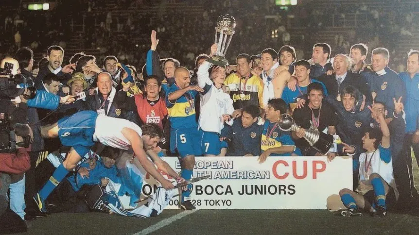
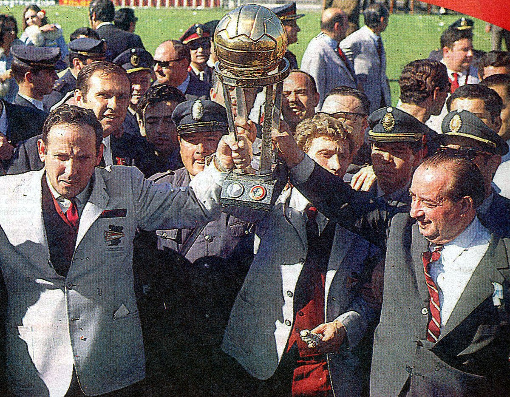

Trabajo Pràctico Nº3 Listas
¿Para qué sirve la etiqueta ul? Dar un ejemplo en donde lo utilizarías.
La etiqueta <ul> sirve para crear una lista desordenada por ejemplo una lista de compra
¿Para qué sirve la etiqueta ol? Dar un ejemplo en donde lo utilizarías.
La etiqueta <ol> sirve para crear una lista ordenada, por ejemplo una receta de cocina
¿Para qué sirve la etiqueta dl? Dar un ejemplo en donde lo utilizarías
Sirve para crear lista descriptivas para conceptos o descriptivos por ejemplo en los titulos del Club Atletico
Boca Juniors
¿Para qué sirve la etiqueta li? Dar un ejemplo en donde lo utilizarías.
La etiqueta <li > sirve para meter dentro de la etiqueta el contenido de la lista para que
forme parte de esta, por ejemplo, en la lista de equipos Argentinos que jamas descendieron
Crea una lista desordenada con tres elementos (li) que contengan nombres de países de América del Sur.
Crea una lista ordenada con cinco elementos (li) que contengan los días de la semana en orden alfabético.
- Domingo
- Jueves
- Lunes
- Martes
- Miercoles
Anida una lista desordenada dentro de otro elemento li de otra lista desordenada para crear una lista anidada de
frutas y verduras.
Crea una lista ordenada, respetando las negritas y el subrayado, que contenga los siguientes pasos para hacer una tarta de manzana: a) Pelar y cortar las manzanas en rodajas finas. b) Mezclar la canela, el azúcar y la harina en un tazón. c) Colocar la masa de la tarta en un molde para horno. d) Colocar las manzanas sobre la masa de la tarta. e) Hornear la tarta durante 45 minutos.
Pasos para una tarta de Manzana
- Pelar y Cortar las manzanas en rodajas finas
- Mezclar la canela, el azúcar y la Harina en un tazón.
- Colocar la masa de la tarta en un molde para horno.
- Hornear la tarta durante 45 minutos
Existe un atributo que se aplica a la etiqueta ol para ver la lista en orden descendente en vez de ascendente, ¿cuál es ese atributo? Utilizar la referencia de atributos de HTML https://developer.mozilla.org/es/docs/Web/HTML/Attributes
El atributo que se aplica en la etiqueta es "reversed" para que se vea en orden descendente
Utilizando el atributo anterior, crear una lista con cuatro elementos que contengan nombres de películas de terror de forma descendente.
- The Conjuring
- Get Out
- Don't Breathe
- A Cure for Wellness
Elegir un gusto particular y realizar una lista descriptiva de por lo menos 5 elementos. El título debe tener un enlace que lleve a un sitio de referencia. Utilizar en las descripciones etiquetas: strong, em, img.
Maximos ganadores de la Copa Intercontinental en Argentina
- Club Atletico Boca Juniors
- 1: Club Atletico Boca Juniors: El club mas grande de la Argentina ha ganado en 3 ocasiones el trofeo mas prestigiado de clubes, en los años 1977, 2000 y 2003

- Club Atletico Independiente
- 2: El Club Atletico Independiente de Avellaneda ha ganado en 2 ocasiones este trofeo, en los años 1973 y 1984
- Club Estudiantes de La Plata
- El Club Estudiantes de La Plata ha ganado en 1 ocasion este trofeo, en el año 1968

- Club Atletico riBer Plate
- El Club que descendio el 26/6/2011 ha ganado en una sola ocasion el titulo intercontinental en 1986